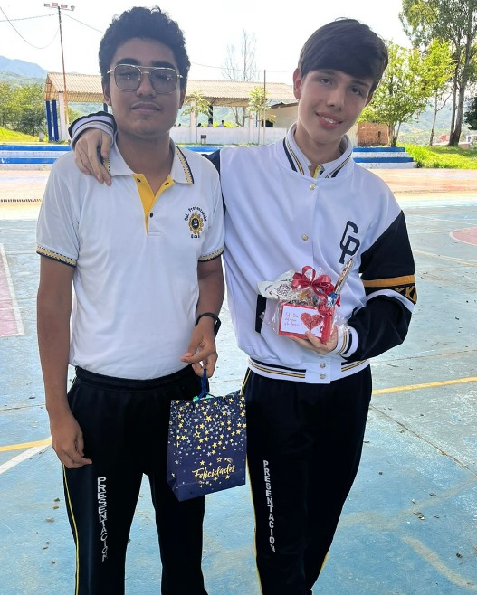

Galería


Juancho es un apasionado por la tecnología y actualmente está estudiando Ingeniería de Sistemas. Desde joven, ha mostrado gran interés por los computadores y la programación.
A lo largo de su vida, Juancho ha desarrollado habilidades en diversos campos como el diseño gráfico, el desarrollo web, y la inteligencia artificial. Su entusiasmo y dedicación lo han llevado a destacar en múltiples proyectos.
Juancho comienza a aprender programación por su cuenta.
Ingresa a la universidad para estudiar Ingeniería de Sistemas.
Participa en su primer hackathon y gana el segundo lugar.
Desarrolla su primera aplicación móvil, que ayuda a organizar tareas.